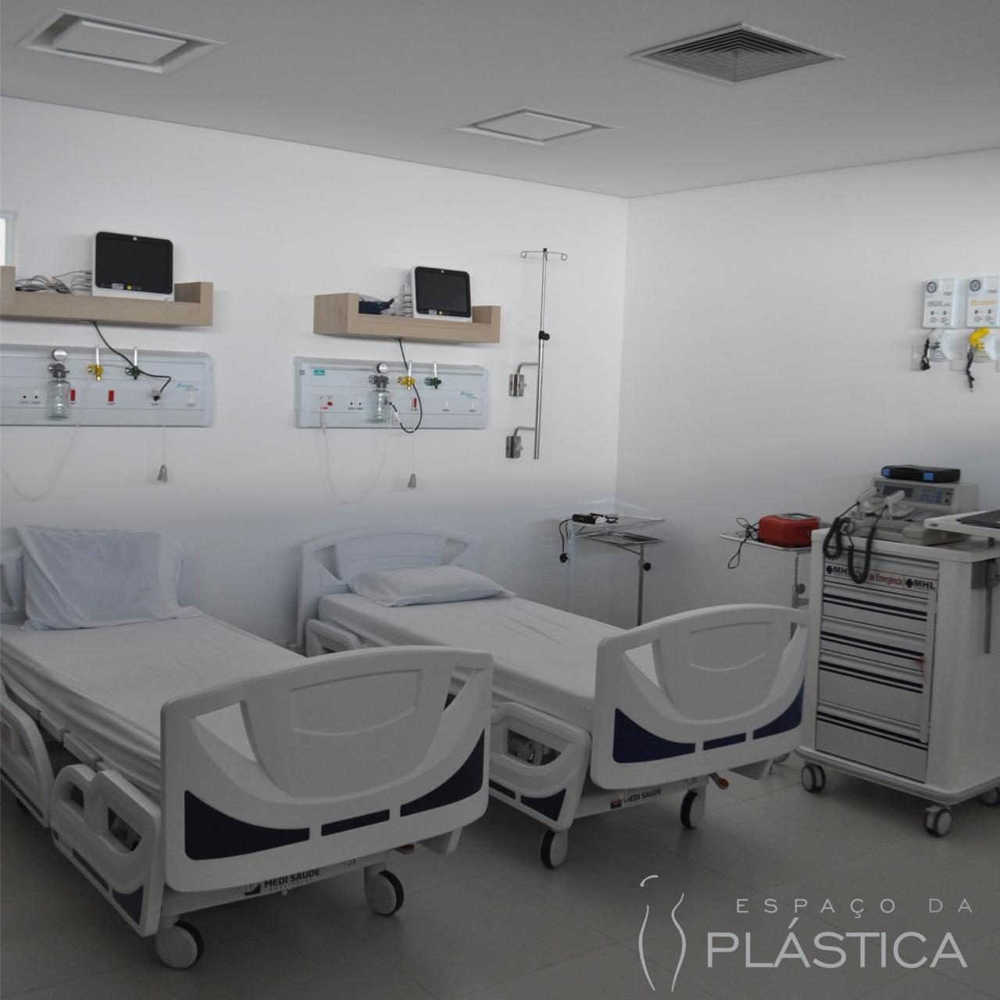

Quando se pensa em cirurgia plástica, quase toda a atenção vai para o antes: a escolha do cirurgião, os exames, a expectativa. Mas quem já passou por uma cirurgia sabe que existe um segundo capítulo, menos fotografado e igualmente decisivo — a recuperação. É nela que o corpo faz o trabalho silencioso de cicatrizar, e é nela que a estrutura ao redor do paciente mostra para que serve.
Este artigo percorre esse capítulo em três momentos: as primeiras horas após a cirurgia, a permanência no quarto e os primeiros dias em casa. Sem prazos mágicos e sem promessas — porque recuperação séria não se promete, se acompanha.

As primeiras horas: despertar com supervisão
O período que se segue ao fim da cirurgia é o mais delicado do processo. O paciente desperta da anestesia de forma gradual, e esse despertar pede supervisão profissional: monitoramento dos sinais vitais, controle da dor, atenção a náuseas e ao conforto térmico. É um trabalho de equipe — e é por isso que ele acontece dentro de ambiente preparado para isso, com enfermagem presente e o cirurgião acessível.
Nesse momento, a estrutura importa de um jeito muito concreto: quando o centro cirúrgico e a área de recuperação ficam sob o mesmo teto, o paciente não precisa ser transferido de um endereço a outro no seu momento mais vulnerável. A equipe que acompanhou a cirurgia é a mesma que acompanha o despertar — sem trocas de contexto, sem perda de informação pelo caminho.
O papel da estrutura hospitalar
Recuperar-se num hospital dedicado à cirurgia plástica tem uma vantagem discreta, mas valiosa: todos ali fazem a mesma coisa, todos os dias. A enfermagem conhece as particularidades do pós-operatório de cada tipo de procedimento; a rotina do lugar foi desenhada em função de cirurgias eletivas planejadas — e não adaptada nos intervalos de um pronto-socorro.
Isso se traduz em detalhes que o paciente sente sem precisar nomear: a resposta rápida ao toque da campainha, o curativo revisado por quem sabe exatamente o que procurar, a orientação repetida com paciência quantas vezes for preciso. E se algo foge do esperado, a equipe e o ambiente estão preparados para responder ali mesmo, de imediato.
Hotelaria: por que conforto é parte do cuidado
Costuma-se tratar conforto como um luxo acessório. Na recuperação cirúrgica, ele é parte do plano de cuidado. Dormir bem, sentir-se em ambiente silencioso e acolhedor, ter privacidade para os primeiros curativos e a presença de um acompanhante — tudo isso reduz a ansiedade, e um paciente tranquilo colabora melhor com a própria recuperação.
É essa a lógica da hotelaria hospitalar: quartos privativos pensados como suítes, enxoval cuidado, iluminação serena e uma equipe atenta a detalhes que não aparecem em prontuário — a temperatura do quarto, o horário do descanso, a forma de servir uma refeição leve. Nada disso substitui a medicina; tudo isso a acompanha.
Os primeiros dias em casa
A alta hospitalar não encerra a recuperação — apenas muda o endereço dela. Os primeiros dias em casa costumam pedir calma e obediência às orientações individuais do cirurgião, que variam conforme o procedimento e o caso. De forma geral, fazem parte desse período:
- Repouso relativo. Descansar sem imobilidade total, respeitando os limites orientados para o seu caso.
- Cuidados com curativos e cicatriz, exatamente como orientado — sem improvisos nem receitas da internet.
- Uso de itens indicados pelo cirurgião, quando fizerem parte do plano — como malhas compressivas ou sessões de drenagem linfática.
- Medicação nos horários prescritos, incluindo o controle da dor, sem antecipar nem suspender nada por conta própria.
- Atenção a sinais de alerta. Febre, dor desproporcional, vermelhidão intensa ou qualquer mudança abrupta merecem contato imediato com a equipe — na dúvida, ligue.
Um detalhe que faz diferença: deixar a casa preparada antes da cirurgia. Roupas confortáveis à mão, travesseiros extras, compromissos remarcados e alguém por perto nos primeiros dias transformam a volta para casa num prolongamento do descanso — e não numa fonte nova de esforço.
O corpo se recupera — e o emocional também
Há um aspecto da recuperação de que se fala pouco: os primeiros dias raramente se parecem com a imagem que motivou a cirurgia. Inchaço e roxos fazem parte do processo de cicatrização e são esperados; a aparência evolui de forma gradual, ao longo de semanas, no ritmo de cada organismo. Julgar qualquer coisa pelo espelho da primeira semana é injusto com o próprio corpo — e costuma gerar ansiedade desnecessária.
Também é comum que o humor oscile nesse período. O repouso forçado, o desconforto físico e a expectativa formam uma combinação que pede paciência — com o processo e consigo. Evite comparar a sua evolução com relatos de outras pessoas na internet: cada caso é um caso, no sentido mais literal da expressão. E se a ansiedade apertar, diga isso à equipe que acompanha você; acolher dúvidas e inseguranças também é parte do cuidado pós-operatório.
Cada corpo tem um ritmo
É natural querer datas: quando volto a dirigir, a trabalhar, a treinar. A resposta honesta é que esses prazos são individuais — dependem do procedimento realizado, do seu organismo e da evolução observada nas consultas de retorno. Desconfie de cronogramas prontos que prometem o mesmo calendário para todo mundo; confie no acompanhamento que olha para a sua evolução.
As consultas de retorno, aliás, são o fio condutor de toda essa fase. É nelas que o cirurgião avalia a cicatrização, ajusta orientações e libera, etapa por etapa, o retorno às atividades. Comparecer a todas — mesmo se sentindo bem — é parte do tratamento, não formalidade.
Como fazemos aqui: no Hospital Espaço da Plástica, em Campo Grande-MS, centro cirúrgico e quartos de recuperação funcionam sob o mesmo teto, com hotelaria dedicada e equipe voltada exclusivamente à cirurgia plástica. Conheça a hotelaria e a estrutura do hospital.
Este artigo tem caráter exclusivamente informativo e não substitui a consulta médica nem as orientações individuais do seu cirurgião. Todo procedimento cirúrgico envolve riscos. A avaliação individual com um cirurgião plástico é indispensável.